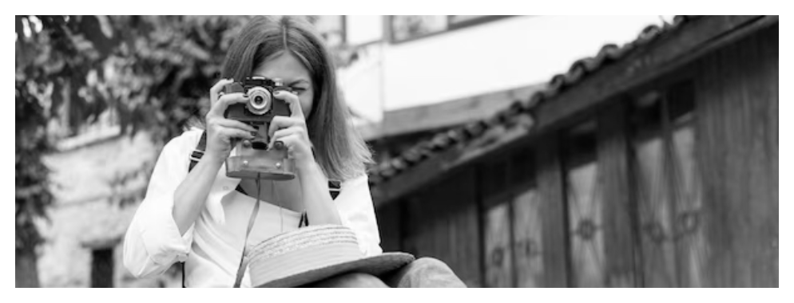

Bienvenidos a mi "Curriculum web"
SOFÍA KERNER
Licenciada en Cine y Tv / Fotógrafa / Educadora

EXPERIENCIA PROFESIONAL
COMUNICADORA / TALLERISTA 2021-ACTUALIDAD
(Asociación Civil Utopías - Córdoba, Argentina).
COMUNICADORA / REALIZADORA AUDIOVISUAL - 2022
Comunidad de Estudios Jaina - Tarija Bolivia.
DOCUMENTAL "Enraizadas"
directora del documental en desarrollo, ganador del concurso regional.
TALLERISTA / COORDINADORA DE TALLER CINE E INFANCIAS
Centro Educativo “Nuevas oportunidades”
TALLERISTA Y COORDINADORA DE TALLERES COMUNITARIOS DE FOTOGRAFÍA
Talleres de fotografía itinerantes
EDUCACIÓN
LICENCIATURA EN CINE Y TELEVISIÓN - 2019
Universidad Nacional de Córdoba
DIPLOMATURA EN INVESTIGACIÓN Y CONSERVACIÓN FOTOGRÁFICA DOCUMENTAL - 2019
Buenos Aires
TECNICATURA Y PRODUCCIÓN DE MEDIOS AUDIOVISUALES - 2013
Universidad Nacional de Córdoba
CAPACITACIONES
Residencia fotográfica en Narrativas de género e identidad “Estallidxs - existimos”
ORGANIZADO POR COLECTIVO WARMI PHOTO BOLIVIA AÑO 2021
Taller Método Varda - Centro de Estudios Fotográficos
DICTADO POR AYELÉN KOOPMANN AÑO 2022
Workshop de Retrato fotográfico "La suspención del tiempo"
DICTADO POR LIC. GASTÓN BAILO AÑO 2021
Taller de Cine y Ecofeminismos
FESTIVAL INTERNACIONAL DE CINE AMBIENTAL FINCA. AÑO 2020.
Workshop de narrativas visuales "Contar con la mirada"
DICTADO POR LIC. GASTÓN BAILO AÑO 2019
Curso El autorretrato, como herramienta de autoconocimiento
DICTADO POR ESCUELA DE FOTOGRAFÍA ANDANA PHOTO.(ESPAÑA) AÑO 2021.
Taller "dirección de actores niños" Festival Oberá en
cortos.
DICTADO POR MARÍA LAURA BERCH AÑO 2015
Chusmeá mis trabajos!